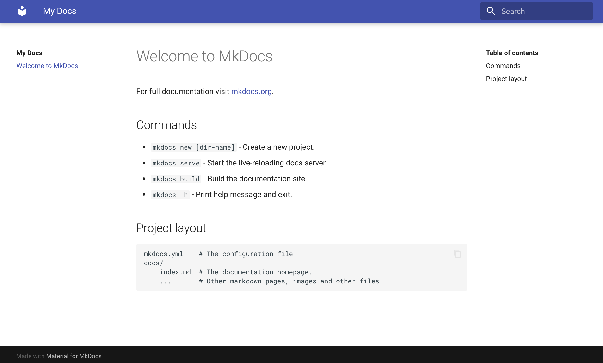
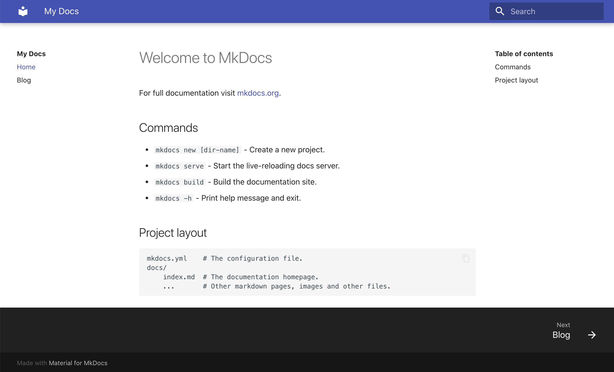
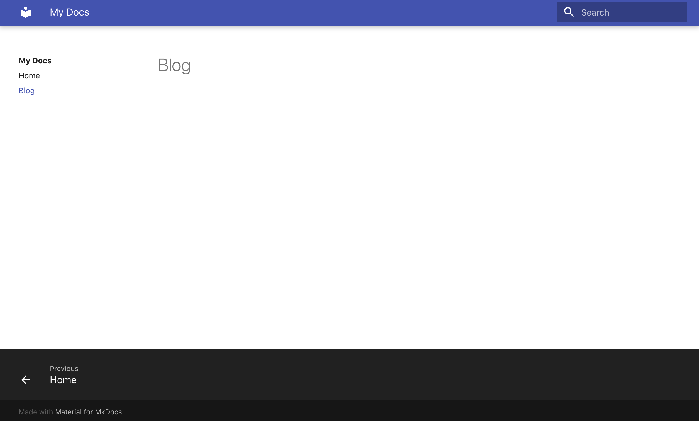
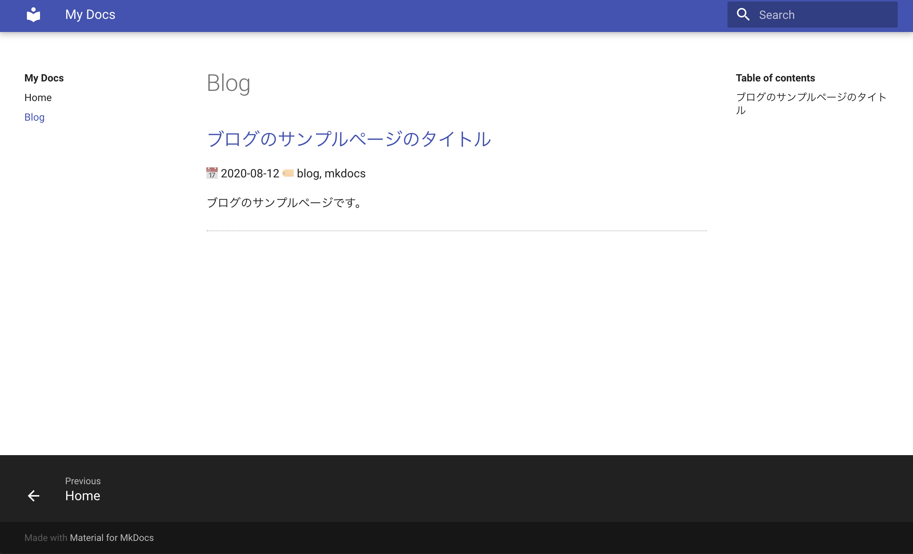
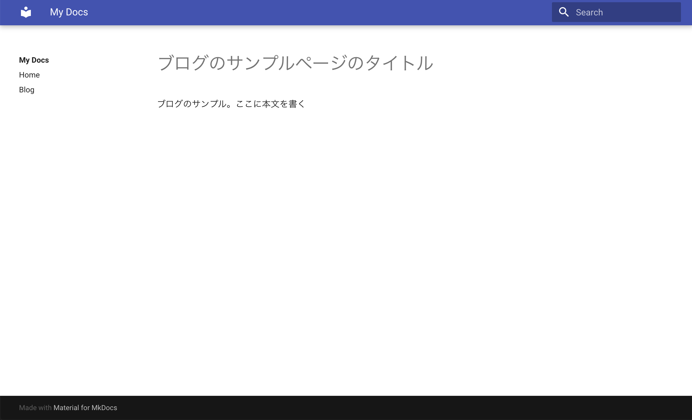
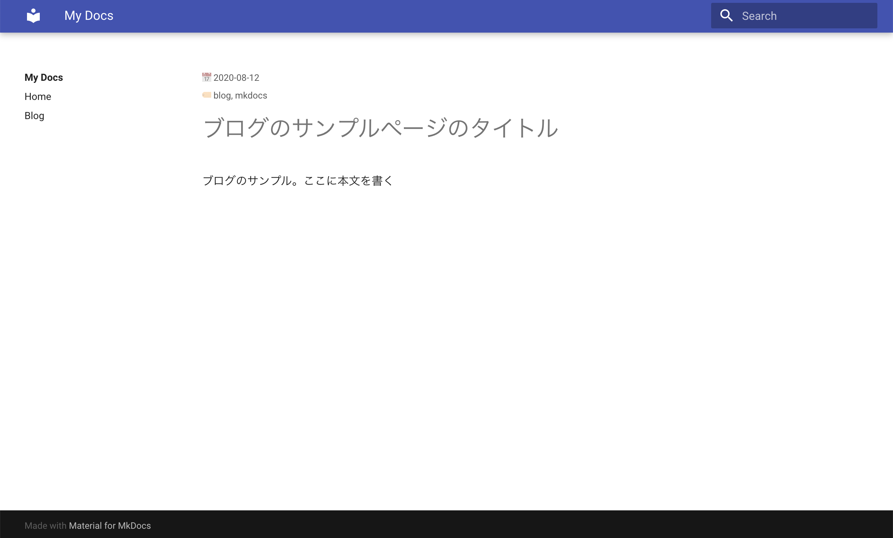

MkDocsでブログを書く
今までブログはMarkdownで書き、GitHub Pagesがデフォルトで提供しているテーマ+カスタムCSSという設定で運用していました。
この方法では、記事をMarkdownで作成しGitHubプッシュすれば、あとはGitHubが自動でHTMLにビルドして https://<username>.github.io というドメインにページを公開してくれ、大変便利でした。
一方で、ソフトウェアのドキュメントは普段から MkDocs を使って書いており、シンプルな設定でスタティックのサイトを構成できるのでとても重宝しています。
そこで今回、使い慣れた MkDocs でブログも書けないものかと設定を考えてみました。 MkDocsには標準ではブログの機能は入っていないため、必要なものは自分で実装する必要があります。
Note
MkDocsには プラグイン があり、その中にはブログ用のものもあるようです。
ブログ用といっても自分には多くの機能は必要ないため、最低限の次の機能を入れる方法を検討しました。
- 記事一覧
- 日付、タグ、ブログの概要等のメタデータ
そこで今回、MkDocsとそのテーマの一つである material を使って、MkDocsをブログ用にカスタムする方法を考えてみました。
結局、何ができるようになるのか
ブログ記事となる Markdown の冒頭に日付、タグ、詳細といったメタデータを付与することで、 それにしたがって
- 記事一覧ページの作成
- 各記事に日付、タグの表示
ができるようになります。
ディレクトリ構成
今回は次のように大きく二つのディレクトリからなる構成にします。
1 2 3 | |
src ディレクトリ以下にMkDocsの設定ファイル mkdocs.yml およびMarkdownのドキュメントを置きます。
そして、 docs ディレクトリ以下にはビルドしたHTMLファイルを置きます。
GitHub Pagesでは公開するディレクトリの設定として
- プロジェクトの
masterブランチのルートディレクトリ以下 - プロジェクトの
masterブランチのdocsディレクトリ以下 gh-pagesブランチのルートディレクトリ以下
の3種類を提供しています。 今回のように、設定ファイルとHTMLファイルを一つのプロジェクトの同じブランチ以下で管理する場合は2番目の方法をとります。 HTMLドキュメントを GitHub Pagers で公開するときにどの戦略を取るのがよいかは CircleCI のブログ が大変参考になりました。
それでは設定していきます。
インストール
設定に先立って、今回作業するコンテナを起動します。
1 | |
必要なパッケージをインストールします。
1 2 | |
MkDocs の初期設定
mkdocs new コマンドで MkDocs の初期設定ファイルを src ディレクトリ以下に生成します。
1 2 3 4 | |
これで初期設定ファイルとMarkdownファイルが生成されます。
1 2 3 4 5 6 7 8 | |
MkDocsでは mkdocs serve コマンドでローカルサーバを立ち上げる機能があり、作成したドキュメントをブラウザから確認することができます。
それではコマンドを実行してみましょう。
1 | |
http://localhost:8000 にブラウザからアクセスすると src/docs/index.md に書かれた内容が表示されます。
確認できたら一度 C-c でサーバを終了させておきましょう。
スタティックファイルのビルド
ローカルサーバでドキュメントを確認できたら、スタティックなHTMLファイルを生成してみましょう。
1 2 3 4 5 6 | |
はじめに説明したディレクトリ構成にしたがって、HTMLファイルの生成場所を --site-dir オプションで src ディレクトリからの相対パス ../docs ディレクトリに設定しています。
これで、 docs 以下にHTMLファイルが生成できます。
あとは GitHub にプッシュして GitHub Pagers の設定をすれば公開完了です。(今回はGitHubにプッシュする以降のステップは省略します。)
ここまでで次のようなディレクトリ構成になりました。
1 2 3 4 5 6 7 8 9 10 11 12 13 14 15 16 17 | |
テーマの設定
それでは、MkDocsにmaterialの設定をしてみましょう。
次のように src/mkdocs.yml の theme パラメータ以下で material を指定します。
1 2 3 4 | |
再びサーバを起動して確認すると、material のテーマになっていることがわかります。

記事の作成
テーマの設定まで完了しましたので、次はサンプルとなるブログ記事を作成してみましょう。
今回は src/docs/blog というディレクトリを作成してその下にブログ記事を置くことにします。
1 2 | |
テスト用にブログ記事を適当に書いておきましょう。
1 2 3 4 5 6 7 8 9 | |
ポイントは、Markdownの先頭に --- で挟むことでメタデータを付与することです。
このメタデータが今回のブログ化で最も重要な点になります。
メタデータは MkDocs 内でページを生成する際に使うことができる他、
後ほどスクリプトで解析して記事一覧ページを自動作成するのにも利用します。
ブログ記事の一覧ページを作成する
ブログ記事は一覧ページで確認できるのが望ましいですので、一覧ページを作成してみましょう。
そこでまず、 src/docs/blog.md というブログ一覧ページ用のファイルを作成します。
1 | |
このファイルの内容は後からスクリプトで自動生成することにしますので、 ひとまず空ファイルのまま進めましょう。
次に src/mkdocs.yml で nav の設定を行い、一覧ページを表示するように設定します。
1 2 3 4 5 6 7 8 | |
こうすることで、ページ左側の Blog という箇所をクリックすれば一覧ページが見えるようになります。

実際に Blog をクリックしてページをみてみましょう。

タイトルのみの空のページが見えました。
次に、一覧ページを作成するスクリプト build_blog.py を作成します。
このスクリプトは、記事が置かれているディレクトリ (本記事ではsrc/docs/blog ) 以下に置かれているMarkdownファイルを対象に、そのメタデータとMarkdownファイル中のタイトルを抽出し、それらをまとめたMarkdown文字列を出力します。
1 2 3 4 5 6 7 8 9 10 11 12 13 14 15 16 17 18 19 20 21 22 23 24 25 26 27 28 29 30 31 32 33 34 35 36 37 38 39 40 41 42 43 44 45 46 47 48 49 50 51 52 53 54 55 56 | |
doc_dir に記事が置かれているディレクトリを、render_path_prefix で MkDocs のドキュメントルートから各記事のファイルパスのプリフィックスを指定して実行します。
それでは実行してみましょう。
1 2 3 4 5 6 7 | |
うまく動いているようですね！それでは、この出力をブログ一覧ページにリダイレクトしましょう。
1 | |
これで記事一覧ページができました。実際に確認してみましょう。

きちんと記事一覧ページができていることがわかります。
記事毎に日時、タグを表示する
記事一覧ページから記事へのリンクをクリックしてみましょう。

きちんと記事が見れますね！ ただ、この記事にも日付とタグが表示されるとよいです。
そこで、materialのテーマをカスタムしてMarkdown中のメタデータを表示するようにしてみましょう。
それには material のブロックをオーバーライド します。
今回は、記事の内容をオーバーライドするので、上記のドキュメントの content をオーバーライドすることになります。
それではまず、公式ドキュメントにしたがってオーバーライドするようのディレクトリとファイルを作成します。
1 2 3 4 5 6 7 8 9 10 11 12 13 14 15 16 17 18 19 20 21 22 | |
{% block content %} 以下で content をオーバーライドし、元ある記事の上部にメタデータの date と tag が定義されている場合には表示するようにします。
定義されていない場合は表示されないので、例えばトップページやブログ一覧ページではメタデータは表示されないのです。
これは期待通りの動作になっていますね！
Note
テンプレートの変数として何が使えるかは MkDocs の公式ドキュメントを参照してください。 https://www.mkdocs.org/user-guide/custom-themes/#pagemeta
さて、最後にオーバーライドのディレクトリパスを src/mkdocs.yml で設定します。
1 2 3 4 5 6 7 8 9 | |
実際に表示してみましょう。

当初の目的通りに日付とタグが表示されました！
まとめ
今回は MkDocs を使ってブログ記事を書く方法について検討しました。 Markdownファイルの冒頭にメタデータを付与しておくことで、
- スクリプトによる一覧ページの作成
- materialテーマのオーバーライドによる各記事のトップへ日付とタグの表示
が可能になりました。
慣れている MkDocs で、ブログとして個人的に最低限必要な機能をつけることができました